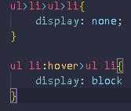
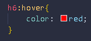
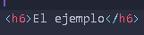

- Para hacer submenús:
Se crea la lista adentro de otra lista(como mostré en la parte de listas de html) y luego en "style.css" hay que hacer dos cosas; primero colocar el "display:none;" y luego el hover "display:block;"
Para hacer esto primero hay que entender que para hacer estos cambios se va a usar en css directamente el nombre de las etiquetas(ul, ol, li) y que se utilizara el ">" que significa "adentro de" entonces si queremos que el "display:none;"(propiedad de CSS que oculta elementos), es decir, ocultar los submenú tendremos que en el caso del ejemplo(y del que usamos siempre con el profe) poner "ul>li>ul>li{ display: none;}" que significa que la lista que esta adentro de la viñeta "Menú" que esta adentro de una lista desordenada va a ocultarse.
Luego el segúndo paso será hacer que esa misma lista que ocultamos cuando pasemos el cursos aparezca y ahí es donde entra "hover" en el juego. Le tenemos que volver a decir a css que la lista adentro de la viñeta adentro de una lista desordenada se disperse en bloque(o sea el "display: block;") pero esta vez se pone diferente y se le suma el hover a la viñeta donde se desprende los submenús, "ul li:hover>ul li{ display: block;}" que significa que la lista de la lista desordenada que esta abajo de la viñeta que tiene hover que esta adentro de la lista desordenada principal va a verse cuando pase el cursos/mouse por encima.
Así se ve en CSS
Así se vería en html

Así se ve en la web:
- Menú
- Submenú
- Menú
- Para cambiar el color:
- Si querés que el color de un titúlo(en este caso use el h6, y recuerden que hay de h1 a h6, lo unico que va cambiando es el tamaño, pero es una manera de usar titulos y subtitulos con un estilo ya predeterminado por el vs code) cambie al pasar el cursor es más facil, solo hay que ponerle el nombre de la etiqueta y ":hover" y poner "color" y el color que querés(tmb se puede con el tamaño, estilo de letra, etc prueben con lo que les guste)
Así se ve en css:
Así en html:
Así en la web:
El ejemplo
- Si querés que el color de un titúlo(en este caso use el h6, y recuerden que hay de h1 a h6, lo unico que va cambiando es el tamaño, pero es una manera de usar titulos y subtitulos con un estilo ya predeterminado por el vs code) cambie al pasar el cursor es más facil, solo hay que ponerle el nombre de la etiqueta y ":hover" y poner "color" y el color que querés(tmb se puede con el tamaño, estilo de letra, etc prueben con lo que les guste)